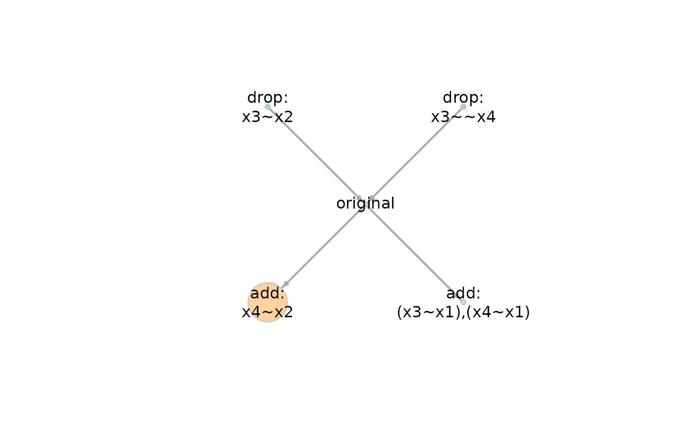

Plot a network of models
generated by model_graph().
Usage
# S3 method for model_graph
plot(x, ...)Arguments
- x
The output of
model_graph(). (Namedxbecause it is required in the naming of arguments of theplotgeneric function.)- ...
Additional arguments, passed to
plot.igraph().
Details
This function is the plot
method of model_graph objects,
the output of
model_graph().
For now, it simply passes the object
to plot.igraph(). This function
is created for possible customization
of the plot in the future.
Examples
library(lavaan)
dat <- dat_path_model
mod <-
"
x3 ~ a*x1 + b*x2
x4 ~ a*x1
ab := a*b
"
fit <- sem(mod, dat_path_model, fixed.x = TRUE)
out <- model_set(fit)
out
#>
#> Call:
#> model_set(sem_out = fit)
#>
#> Number of model(s) fitted : 5
#> Number of model(s) converged : 5
#> Number of model(s) passed post.check: 5
#>
#> The models (sorted by BPP):
#> df Prior BIC BPP Cumulative
#> add: x4~x2 1 0.200 400.291 1.000 1.000
#> original 0 0.200 431.452 0.000 1.000
#> add: (x3~x1),(x4~x1) 1 0.200 435.397 0.000 1.000
#> drop: x3~~x4 -1 0.200 441.229 0.000 1.000
#> drop: x3~x2 -1 0.200 455.926 0.000 1.000
#>
#> Note:
#> - BIC: Bayesian Information Criterion.
#> - BPP: BIC posterior probability.
#> - Cumulative: Cumulative BIC posterior probability.
g <- model_graph(out)
plot(g)
